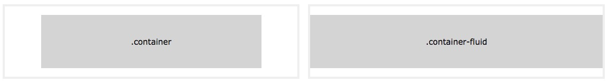

Bootstrap4 安装使用
Bootstrap4 をインストールするには、次の2つの方法があります。
Bootstrap 4 CDN
国内ではバイトダンスの静的リソース公開ライブラリの使用を推奨します：
Bootstrap4 CDN
<link rel="stylesheet" href="https://cdnjs.cloudflare.com/ajax/libs/twitter-bootstrap/4.6.1/css/bootstrap.min.css">
<script src="https://cdnjs.cloudflare.com/ajax/libs/jquery/3.6.0/jquery.min.js"></script>
<script src="https://cdnjs.cloudflare.com/ajax/libs/popper.js/2.11.2/umd/popper.min.js"></script>
<script src="https://cdnjs.cloudflare.com/ajax/libs/twitter-bootstrap/4.6.1/js/bootstrap.min.js"></script>
国内では、Staticfile CDN 上のライブラリを使用することをお勧めします：
Bootstrap4 CDN
<link rel="stylesheet" href="https://cdn.staticfile.net/twitter-bootstrap/4.3.1/css/bootstrap.min.css">
<script src="https://cdn.staticfile.net/jquery/3.2.1/jquery.min.js"></script>
<script src="https://cdn.staticfile.net/popper.js/1.15.0/umd/popper.min.js"></script>
<script src="https://cdn.staticfile.net/twitter-bootstrap/4.3.1/js/bootstrap.min.js"></script>
注意：popper.min.js は、ポップオーバー、ツールチップ、ドロップダウンメニューの設定に使用されます。現在、bootstrap.bundle.min.js にはすでに含まれています。popper.min.js。
さらに、以下のCDNサービスを使用することもできます。
下载 Bootstrap 4
公式サイトに行くことができますhttps://getbootstrap.com/Bootstrap4 リソースライブラリをダウンロードします。
注：さらに、パッケージ管理ツールの npm、gem、composer などを使用してインストールすることもできます。
npm install bootstrap@4.0.0-beta.2
gem 'bootstrap', '~> 4.0.0.beta2'
composer require twbs/bootstrap:4.0.0-beta.2
最初の Bootstrap 4 ページを作成する
1、添加 HTML5 doctype
Bootstrap は HTML5 ファイルタイプを要求するため、HTML5 doctype 宣言を追加する必要があります。
HTML5 doctype をドキュメントの先頭で宣言し、対応するエンコーディングを設定します:
<!DOCTYPE html>
<html>
<head>
<meta charset="utf-8">
</head>
</html>
モバイルファースト
Bootstrap で開発したウェブサイトをモバイルデバイスに適したものにするため、適切な描画とタッチスクリーンのズームを確保するには、ウェブページの head 内に viewport meta タグを以下のように追加する必要があります:
<meta name="viewport" content="width=device-width, initial-scale=1, shrink-to-fit=no">
width=device-width幅がデバイス画面の幅であることを示します。
initial-scale=1初期ズーム倍率を示します。
shrink-to-fit=no は、スマートフォンの画面幅に自動的に適応します。
容器类
Bootstrap 4 は、ウェブサイトのコンテンツを包むコンテナ要素が必要です。
次の2つのコンテナクラスを使用できます。
- .container クラスは、固定幅でレスポンシブレイアウトに対応するコンテナに使用されます。
- .container-fluid クラスは、100% の幅で、全ビューポートを占めるコンテナに使用されます。

2 つの Bootstrap 4 ページ
Bootstrap4 .container 实例
<div class="container">
<h1>私の最初のBootstrapページ</h1>
<p>これはいくつかのテキストです。</p>
</div>
尝试一下 »
次の例は、ビューポート全体を占めるコンテナーを示しています。
Bootstrap4 .container-fluid 实例
<div class="container-fluid">
<h1>私の最初のBootstrapページ</h1>
<p>.container-fluid を使用し、100% 幅で、ビューポート全体を占めるコンテナ。</p>
</div>
尝试一下 »
<div style="display:none;">
<hr><h2 id="cs-bs4">に Cloud Studio 中使用 Bootstrap</h2>
<p>下面我们介绍如何に Cloud Studio 中安装、使用 Bootstrap4：</p>
<ul><li><p>step1：访问 <a target="_blank" href='https://studio.dev.tencent.com/' rel="noopener noreferrer">腾讯云开发者平台</a>，注册/登录账户。</p></li>
<li><p>step2：に右侧の运行环境菜单选择：<code>"ubuntu"</code></p>
<p><img src='https://dn-coding-net-production-pp.qbox.me/1a84909d-c924-4699-9dcb-25339dec2780.jpg' alt='' /></p></li><li><p>step3：に左侧代码目录中新建 html 目录，编写你の HTML 代码，例如 index.html</p></li><li><p>step4：に index.html 文件の中粘贴如下代码、来引入 Bootsrap4（也可以公式サイトから <a target="_blank" href='https://getbootstrap.com/' rel="noopener noreferrer">https://getbootstrap.com/</a> 下载到 Bootstrap4 资源库）：</p>
<pre><!-- 新 Bootstrap4 核心 CSS 文件 -->
<link rel="stylesheet" href="https://cdn.staticfile.net/twitter-bootstrap/4.1.0/css/bootstrap.min.css">
<!-- jQueryファイル。必ずbootstrap.min.js の前に読み込んでください。 -->
<script src="https://cdn.staticfile.net/jquery/3.2.1/jquery.min.js"></script>
<!-- popper.min.js 用于弹窗、提示、下拉菜单 -->
<script src="https://cdn.staticfile.net/popper.js/1.12.5/umd/popper.min.js"></script>
<!-- 最新の Bootstrap4 コア JavaScript ファイル -->
<script src="https://cdn.staticfile.net/twitter-bootstrap/4.1.0/js/bootstrap.min.js"></script> </pre>
</li>
<li><p>step5：に终端中输入命令<code>sudo vim /etc/nginx/sites-enabled/default</code>。将配置文件红框部分修改ために如下图所示，然后输入命令：<code>sudo nginx restart</code> 重启 nginx 服务（nginx 安装完成并启动后默认会监听 80 端口。我们需要将 nginx の站点目录以及监听の端口号改ために我们需要の）</p>
<p><img src='https://dn-coding-net-production-pp.qbox.me/bbd3e2ba-1bde-4ef9-9756-961e8fed59fd.jpg' alt='' /></p></li><li><p>step6：点击最右侧の【访问链接】选项卡，に访问链接面板中填写端口号ために：8080（と刚才 nginx 配置ファイル内の端口号一致），点击创建链接，即可点击生成の链接访问我们刚刚编書いた代码，查看 Bootstrap4 组件の效果。</p>
<p><img src='https://dn-coding-net-production-pp.qbox.me/28f1aac8-8fe9-475d-8ff7-8279dab5469e.jpg' alt='' /></p>
<p><img src='https://dn-coding-net-production-pp.qbox.me/b36bdb42-6b8e-4ee7-86a8-3bd3df7d17f4.jpg' alt='' /></li></p></ul>
<p>现に CODING 正に举办一场基于 Cloud Studio 工作空間の【我最喜爱の Cloud Studio 插件评选大赛】。进入活动官网：<a href="https://studio.qcloud.coding.net/campaign/favorite-plugins/index" rel="noopener noreferrer" target="_blank">https://studio.qcloud.coding.net/campaign/favorite-plugins/index</a>，もっと詳しく活动信息。</p>
</div> 其他扩展

クリックしてノートを共有
ノートは本記事の内容の拡張である必要があります！
記事投稿は、ここをクリックしてください
注册邀请码获取方式
分享笔记前必须登录！
注册邀请码获取方式